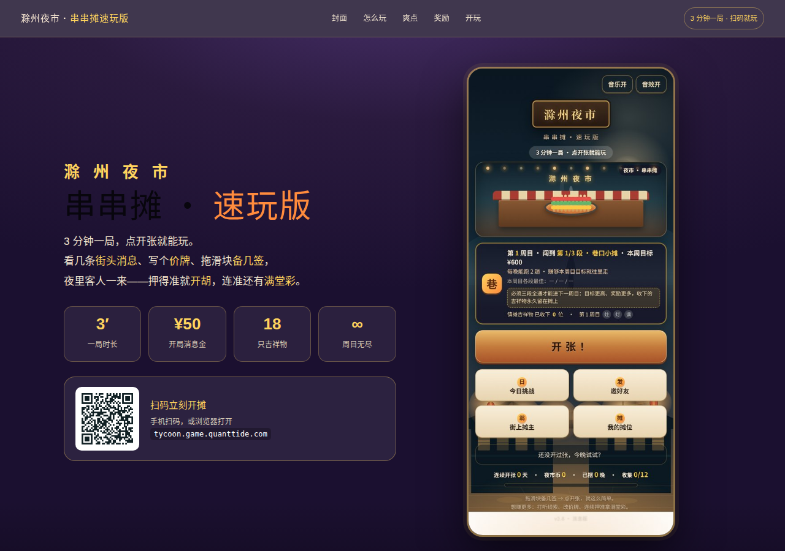

你刚当上实训基地总裁。游戏部门这盘生意——还活着吗？有没有人玩？
不用开会、不用问人——发一句话，让 AI 去公开渠道替你查，交一份运营简报。
前四课你一直在做东西。这一课你不做东西——你看别人做出来的东西。
作为总裁，你的活儿是：查清这盘生意的运营状况，写一份能下判断的简报。
这句是替总裁问的，他要的是一个判断：这盘生意还值不值得继续投。
它会打开站点、翻渠道页和讨论区，读回能点开核对的信号——就像派了个助理去实地看。
两栏：公开可查的（每条带来源链接和日期），必须问内部的（玩家数、收入、下一版计划——写清楚问谁）。
你手里有底牌，它没有。对得上，它老实；对不上——先查自己的抄法，再查它。
这是游戏部门的介绍页——查“还活着吗”的第一站。AI 从这里读最后更新时间和产品定位，再往下翻渠道和讨论区。

下面这份是真实采集后生成的样例，每条都带来源和日期。你发那句话，得到的就是这类东西。
2026-11-15——来源：页面参数 style.css?v=20261115o| 想查的 | 状态 | 问谁 |
|---|---|---|
| 真实玩家数、留存 | 查不到 站点无运营数据 | 运营 |
| 收入、投放花费 | 查不到 无公开财报 | 运营 / 财务 |
| 下一版计划 | 查不到 无路线图 | 产品负责人 |
这两个错是真犯过的——不是提醒，是镜子。做的时候撞上了，回来对一眼。
¥600 去搜，四个资源全空，差点写“它编了价格”——其实代码里是 goal: 600，¥ 是页面渲染时才加的。拉回来：对不上，先换种写法再搜一遍自己的抄法，然后才轮到它。前四课你是作者——用 AI 把想法做成作品。
这一课你是管理者——用 AI 去采集公开信号、整理成能下判断的简报。
同一句话的本事，从"做出来"扩展到了"看清楚"。这就是 AI 在真实工作里最值钱的两种用法。
下一局不用备课：换一个它答不上来的问题——它答得越干脆，越要回网站翻。